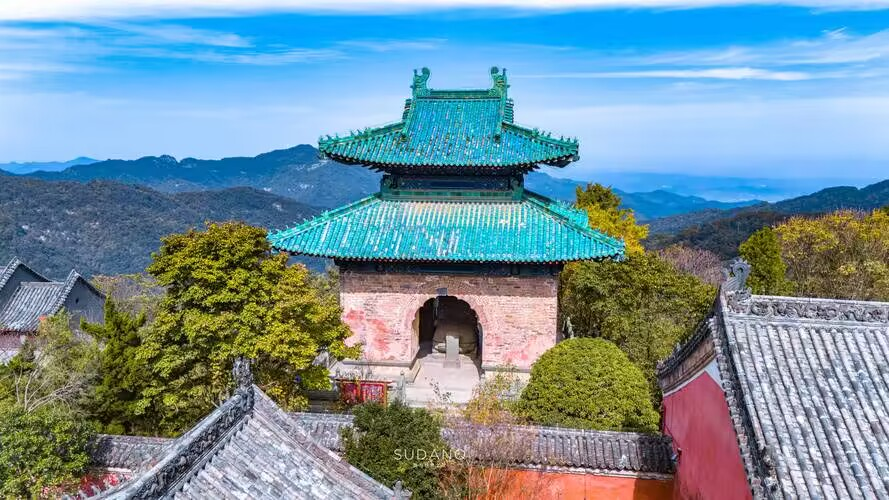

|  | 返回首页 |
|---|---|
| 近现代的武当山 1956年，湖北省将全山古建筑群列为重点文物保护单位。 1961年，金殿被列为国家重点文物保护单位。 1982年02月22日，紫霄宫被列为国家重点文物保护单位。 1983年，国务院把武当山太和宫、紫霄宫列为全国重点宗教活动场所。 1988年01月，“治世玄岳”石牌坊被列为国家重点文物保护单位。 1996年12月15日，南岩宫被列为国家重点文物保护单位。 1994年12月17日，“武当山古建筑群”被联合国列入《世界文化遗产名录》。 2001年07月，玉虚宫遗址被列为国家重点文物保护单位。 2007年05月，启动武当山玉虚宫修缮工程。 2012年，武当山启动武当大兴600年20余项大型系列活动。 2012年07月25日，五龙宫景区正式投入开发建设。 2012年08月01日，因南水北调中线工程，遇真宫顶升工程正式启动。 2012年09月27日，武当山玉虚宫修缮落成。 |
|
| 武当山的文化 中国名山何其多，神韵灵性各自出。地处中国腹地，位于湖北省十堰市丹江口市境内的武当山，背依苍茫千里的神农架原始大森林，面临碧波万顷的太极湖（丹江口水库），方圆八百里，无处不风光。拥七十二峰，抱三十六岩，挟二十四涧，隐宫观无数。高险幽深，飞云荡雾，层峦迭峰，雄浑磅礴，仪态万方，神韵灵秀。 武当山的神奇造化给人类留下了至少七大文化，即道教文化、音乐文化、建筑文化、绘画石刻雕塑文化、武术文化、 饮食文化、民俗文化，这些文化的传承与发展赋予武当山的灵性与亲切。 武当山道教文化得益于独特的武当地理环境所孕育。 生生不息的道教文化的传播使武当名山誉满天下。无武当，“仙”、“道”无根；无道教，武当无名。正可谓“山不在高，有仙则名”。武当仙山，名实相副矣。 武当山音乐文化，是武当山道教文化遗产中最富有特色、最具有珍贵价值的重要组成部分。道教音乐既表现出古代巴楚音乐的苍劲浑厚，又流露出宫廷音乐的优雅风韵，或激扬婉转，或肃穆清新。 参透中国历代文化印迹的武当山古建筑群规模宏大，气势雄伟。据统计，唐至清代共建庙宇五百多处，庙房二万余间。这些追求人文与自然和谐的古建筑群，独具匠心，设计巧妙，宫观宏伟，星罗棋布，香火鼎盛，烟云飘渺，从不伤大山的神韵，为山增采，彰显风格。 武当山的绘画石刻和雕塑文化各具特色，启迪人生，造形优美，栩栩如生，遍及整个武当山岩，具有极高的艺术价值。尤其是铜铸雕塑的神像，制作精细，技艺高超，质量好，品位高。现有神像约一千七百余尊，其中铜像四百五十余尊，铁像五百三十余尊。 武当山的武术文化，源远流长，玄妙飘灵，以静制动，以柔克刚，炼气凝神，刚柔相济，内外兼修，是极好的健身养性之术。代表武当功夫的太极拳快慢结合，柔中有刚，为各国人民所喜爱。全世界近五亿人加入练习太极的行列。 |